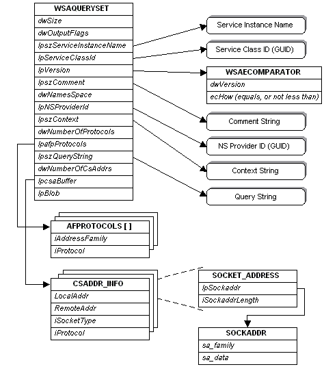
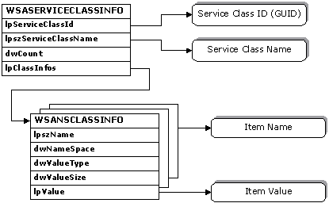

There are several important data structures that are used extensively throughout the name resolution functions.
The WSAQUERYSET structure is used to form queries for WSALookupServiceBegin, and used to deliver query results for WSALookupServiceNext. It is a complex structure since it contains pointers to several other structures, some of which reference still other structures. The relationship between the WSAQUERYSET structure and the structures it references is illustrated as follows.

Within the WSAQUERYSET structure, most of the member are self explanatory, but some deserve additional explanation. The dwSize member must always be filled in with sizeof(WSAQUERYSET), as this is used by namespace providers to detect and adapt to different versions of the WSAQUERYSET structure that may appear over time.
The dwOutputFlags member is used by a namespace provider to provide additional information about query results. For details, see the WSALookupServiceNext function.
The WSAECOMPARATOR structure referenced by the lpversion member is used for both query constraint and results. For queries, the dwVersion member indicates the desired version of the service. The ecHow member is an enumerated type which specifies how the comparison can be made. The choices are COMP_EQUALS which requires that an exact match in version occurs, or COMP_NOTLESS which specifies that the service's version number be no less than the value of the dwVersion member.
The interpretation of dwNameSpace and lpNSProviderId depends upon how the structure is being used and is described further in the individual function descriptions that utilize this structure.
The lpszContext member applies to hierarchical namespaces, and specifies the starting point of a query or the location within the hierarchy where the service resides. The general rules are:
Providers that do not support containment may return an error if anything other than "" or "\" is specified. Providers that support limited containment, such as groups, should accept "", '\", or a designated point. Contexts are namespace specific. If the dwNameSpace member is NS_ALL, then only "" or "\" should be passed as the context since these are recognized by all namespaces.
The lpszQueryString member is used to supply additional, namespace-specific query information such as a string describing a well-known service and transport protocol name, as in "FTP/TCP".
The AFPROTOCOLS structure referenced by the lpafpProtocols member is used for query purposes only, and supplies a list of protocols to constrain the query. These protocols are represented as (address family, protocol) pairs, since protocol values only have meaning within the context of an address family.
The array of the CSADDR_INFO structure referenced by the lpcsaBuffer member contain all of the information needed for either a service to use in establishing a listen, or for a client to use in establishing a connection to the service. The LocalAddr and RemoteAddr members both directly contain a SOCKET_ADDRESS structure.
A service would create a socket by calling the socket or WSASocket function using the tuple of LocalAddr.lpSockaddr->sa_family, iSocketType, and iProtocol as parameters. A service would bind the socket to a local address by calling the bind function using LocalAddr.lpSockaddr and LocalAddr.lpSockaddrLength as parameters.
A client creates its socket by calling the socket or WSASocket function using the tuple of LocalAddr.lpSockaddr->sa_family, iSocketType, and iProtocol as parameters. A client uses the combination of RemoteAddr.lpSockaddr and RemoteAddr.lpSockaddrLength as parameters when making a remote connection using the connect, ConnectEx, or WSAConnect function.
When a new service class is installed, a WSASERVICECLASSINFO structure must be prepared and supplied. This structure also consists of substructures that contain a series of members that apply to specific namespaces. A class info data structure is as follows:

For each service class, there is a single WSASERVICECLASSINFO structure. Within the WSASERVICECLASSINFO structure, the service class' unique identifier is contained in the lpServiceClassId member, and an associated display string is referenced by the lpServiceClassName member. This is the string that is returned by the WSAGetServiceClassNameByClassId function.
The lpClassInfos member in the WSASERVICECLASSINFO structure references an array of WSANSCLASSINFO structures, each of which supplies a named and typed member that applies to a specified namespace. Examples of values for the lpszName member include: "SapId", "TcpPort", "UdpPort", etc. These strings are generally specific to the namespace identified in the dwNameSpace member. Typical values for the dwValueType member might be REG_DWORD, REG_SZ, etc. The dwValueSize member indicates the length of the data item pointed to by lpValue.
The entire collection of data represented in a WSASERVICECLASSINFO structure is provided to each namespace provider when the WSAInstallServiceClass function is invoked. Each individual namespace provider then sifts through the list of WSANSCLASSINFO structures and retains the information applicable to it.
Protocol-Independent Name Resolution
Registration and Name Resolution
Summary of Name Resolution Functions
WSAGetServiceClassNameByClassId
Â
Â